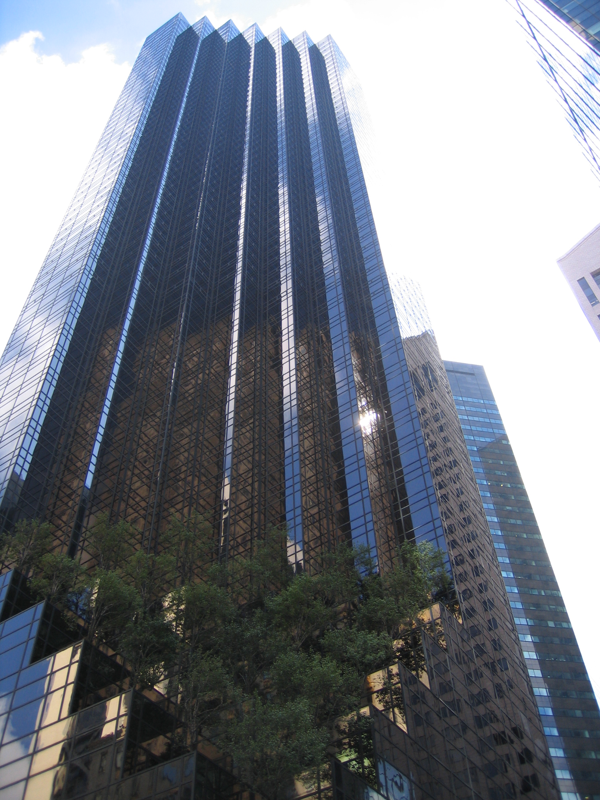

Ondernemingen
Begin in vastgoed
Trump begon zijn loopbaan bij zijn vaders vastgoedbedrijf, Elizabeth Trump & Son, dat zich richtte op huurhuizen voor de middenklasse in de New Yorkse boroughs Brooklyn, Queens en Staten Island. Een van Trumps eerste projecten, toen hij nog studeerde, was de heropleving van het appartementencomplex Swifton Village in Cincinnati, dat zijn vader in 1962 had gekocht voor $ 5,7 miljoen. Toen het bedrijf betrokken raakte in het project, ging het complex met 1.200 appartementen binnen twee jaar van een leegstand van 66% naar volledige bezetting met een investering van $ 500.000. Het bedrijf verkocht Swifton Village in 1972 uiteindelijk voor $ 6,75 miljoen. In 1971 verhuisde Trump naar Manhattan en raakte betrokken bij grotere projecten. Hij gebruikte aantrekkelijke ontwerpen om publieke erkenning te verwerven. Trump kwam voor het eerst in de publieke belangstelling in 1973, toen hij door het Department of Justice ervan verdacht werd de Fair Housing Act te hebben geschonden bij het beheren van 39 gebouwen. Trump beschuldigde vervolgens het Department of Justice ervan zijn bedrijf aan te vallen met als reden dat het een groot bedrijf was. Ook beschuldigde hij het overheidsorgaan ervan zijn bedrijf te verplichten om panden aan ontvangers van uitkeringen te verhuren. Trump trof een schikking in 1975 en zei dat hij blij was dat de overeenkomst zijn bedrijf niet dwong om personen op basis van welvaart als huurders te aanvaarden, tenzij zij net zo geschoold zijn als elke andere huurder.
The Trump Organization
Trump maakte plannen om het oude Penn Central voor $ 60 miljoen te kopen en te ontwikkelen zonder geld te verliezen. Later veranderde hij het failliete Commodore Hotel in het Grand Hyatt New York en cre?erde hij The Trump Organization. New York plande om het Jacob K. Javits Convention Center te bouwen op grond, waarop Trump een optie had om het te mogen kopen. Trump schatte in dat zijn bedrijf het project voor $ 110 miljoen zou kunnen bouwen, maar de stad verwierp zijn aanbod en Trump moest uiteindelijk de makelaarskosten van de verkoop vergoeden. In 1980 werd gestart met de renovatie van de Wollman Rink, een schaatsbaan uit 1955 in Central Park. De renovatie zou 2,5 jaar duren, maar was in 1986 nog niet klaar. Trump nam het beheer van het project over zonder dat de stad ervoor hoefde te betalen en de renovatie eindigde drie maanden later en had $ 1,95 miljoen gekost, $ 750.000 minder dan begroot.
Financi?le problemen
In 1988 kocht Trump het onvoltooide Taj Mahal Casino van Merv Griffin en Resorts International. Deze uitbreiding leidde tot zowel zakelijke als persoonlijke toenemende schulden.In 1989 hadden slechte zakelijke besluiten ervoor gezorgd dat Trump zijn leningen niet meer kon terugbetalen. Trump financierde de rest van de bouw van zijn derde casino, de 1 miljard dollar kostende Taj Mahal, voornamelijk met junk bonds met hoge rentes. Hoewel hij zijn bedrijven had versterkt met extra leningen en de rentebetalingen had uitgesteld, resulteerden de toenemende schulden in 1991 in een zakelijk faillissement. Ook was hij persoonlijk bijna failliet.Banken en obligatiehouders hadden honderden miljoenen dollars verloren, maar zij kozen ervoor Trumps schuld te herstructureren om te voorkomen dat zij in de rechtbank nog meer geld zouden verliezen.De Taj Mahal kwam uit het faillissement op 5 oktober 1991, toen Trump een aandeel van 50% in het casino aan de obligatiehouders gaf in ruil voor een lagere rente op de schuld en meer tijd om de schuld terug te betalen.
Heropleving
In de late jaren negentig verbeterde Trumps financiële situatie. In 2001 opende Trump World Tower, een appartementencomplex met 72 verdiepingen in de buurt van het Hoofdkwartier van de Verenigde Naties in New York. Trump begon ook aan de bouw van Trump Place, een project bestaande uit meerdere gebouwen langs de Hudson. Hij bezit daarnaast bedrijfsruimte in Trump International Hotel and Tower, een multifunctioneel gebouw (hotel en appartementencomplex) met 44 verdiepingen aan de Columbus Circle. Trump is in totaal eigenaar van honderdduizenden vierkante meters aan vastgoed in Manhattan. Trump is een groot aantal vastgoedprojecten begonnen, waaronder Trump International Hotel and Tower (Honolulu), Trump International Hotel and Tower (Chicago), Trump International Hotel and Tower (Toronto) en Trump Tower (Tampa (Florida)). In Fort Lauderdale werd een van Trumps projecten (Trump International Hotel and Tower) stilgelegd om een ander project te helpen. Tegelijkertijd werd Trump Towers Atlanta One ontwikkeld op een plaats met de op een na hoogste voorraad van onverkochte huizen van het land.In 2015 schatte het tijdschrift Forbes zijn netto vermogen op 4,1 miljard dollar. In juni 2015 publiceerde Business Insider een financieel verslag van Trump, waarin stond dat zijn vermogen $ 8,7 miljard bedroeg. Daarvan viel $3,3 miljard onder "licentieovereenkomsten op vastgoed, zijn merk en ontwikkelingen van zijn merk". Volgens Business Insider dacht Trump dus dat zijn persoon een waarde had van $ 3,3 miljard.
